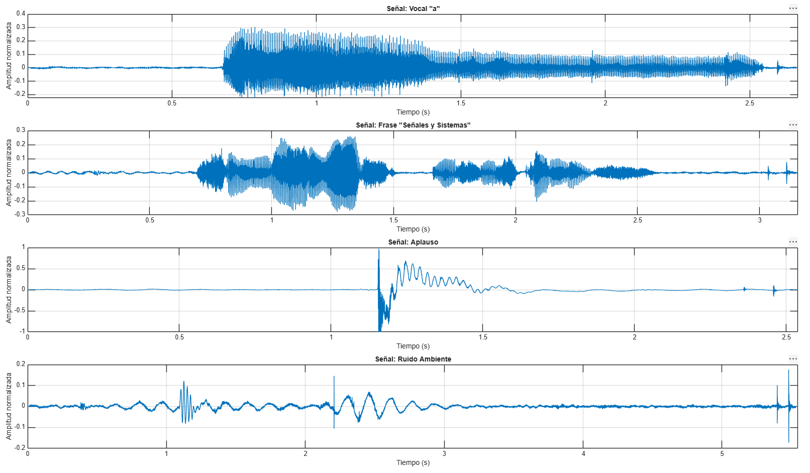
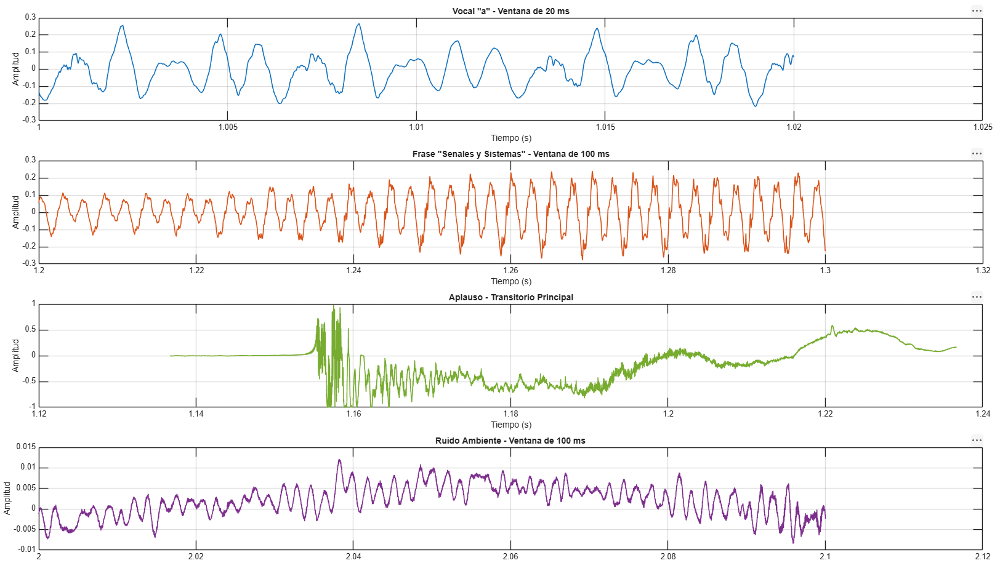
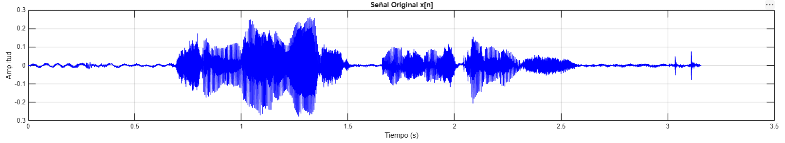
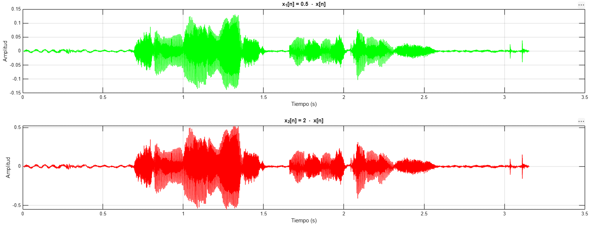
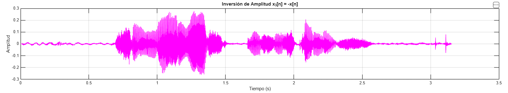
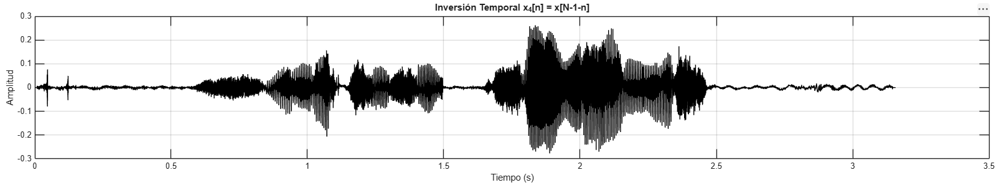
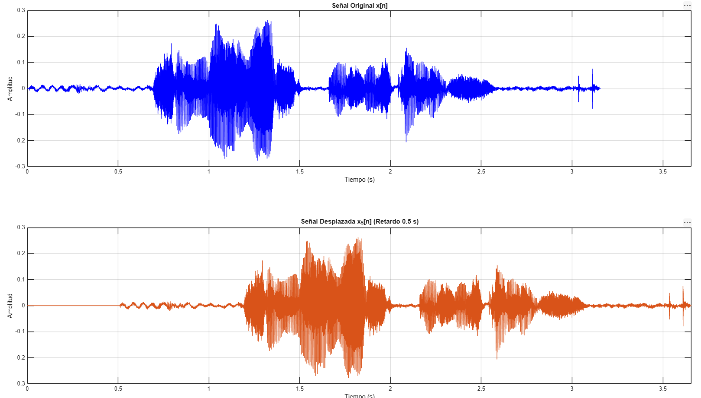
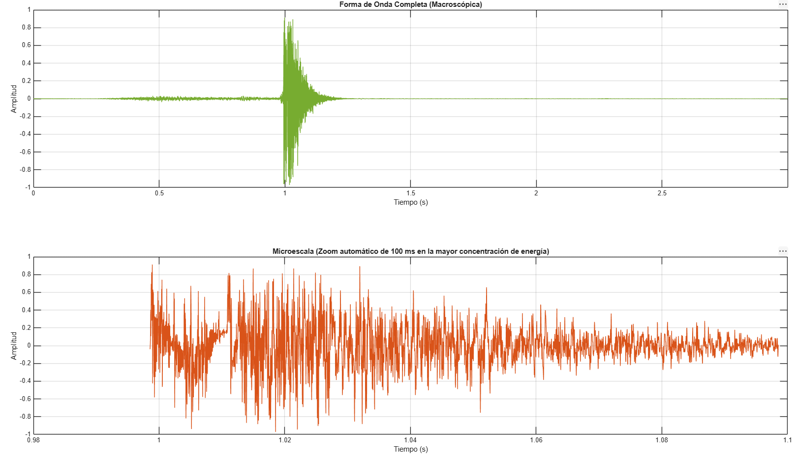

1. Conceptos Previos y Funciones MATLAB
Adquisición
Tasa a la que se toman muestras de una señal para convertirla en discreta (\( F_s \)).
[x, Fs] = audioread('file.wav')
Carga el audio y extrae la frecuencia de muestreo.
Energía y Potencia
La Energía es la intensidad total. Potencia es la energía promedio por muestra.
sum(x.^2)mean(x.^2)
Calculan la energía y la potencia respectivamente.
Transformaciones
Operaciones en dominio temporal y de amplitud aplicadas a vectores discretos.
flip(x)[zeros(N,1); x]
Inversión y desplazamiento agregando muestras nulas.
2.1 Adquisición de Señales Reales Expositor (Gutierrez Ccolqque, Franco Arturo)
Lectura de archivos de audio, conversión a monocanal y estructuración matemática del vector de tiempo digital para 4 tipos de señales grabadas a \( 48\text{ kHz} \).
Vocal "a"
Frase
Aplauso
Ruido Ambiente
% 2.1 Adquisicion y Vectores de Tiempo
archivos = {'Vocal_a.wav', 'Frase.wav', 'Aplauso.wav', 'Ruido.wav'};
nombres = {'Vocal "a"', 'Frase "Señales y Sistemas"', 'Aplauso', 'Ruido Ambiente'};
figure('Name', 'Señales Reales en el Dominio del Tiempo', 'NumberTitle', 'off');
for k = 1:length(archivos)
[x, Fs] = audioread(archivos{k});
% Conversion a mono si es estereo
if size(x, 2) > 1
x = mean(x, 2);
end
N = length(x);
T_dur = N / Fs; % Duracion teorica
t = (0:N-1) / Fs; % Vector de tiempo
t_ultimo = t(end); % Ultimo valor temporal
fprintf('--- %s ---\n', nombres{k});
fprintf('Fs: %d Hz | Muestras (N): %d\n', Fs, N);
fprintf('Duracion teorica (T = N/Fs): %.6f s\n', T_dur);
fprintf('Ultimo valor de t (t[N-1]): %.6f s\n', t_ultimo);
fprintf('Diferencia (T - t[N-1]): %.6f s (1/Fs = %.6f s)\n\n', T_dur - t_ultimo, 1/Fs);
% Grafica
subplot(4, 1, k);
plot(t, x, 'Color', [0 0.4470 0.7410]);
title(sprintf('Señal: %s', nombres{k}));
xlabel('Tiempo (s)');
ylabel('Amplitud normalizada');
grid on;
xlim([0 max(t)]);
endResultados de Ejecución
--- Vocal "a" --- Fs: 48000 Hz | Muestras (N): 128000 Duración teórica (T = N/Fs): 2.666667 s Último valor de t (t[N-1]): 2.666646 s Diferencia (T - t[N-1]): 0.000021 s (1/Fs = 0.000021 s) --- Frase "Señales y Sistemas" --- Fs: 48000 Hz | Muestras (N): 151552 Duración teórica (T = N/Fs): 3.157333 s Último valor de t (t[N-1]): 3.157313 s Diferencia (T - t[N-1]): 0.000021 s (1/Fs = 0.000021 s) --- Aplauso --- Fs: 48000 Hz | Muestras (N): 121856 Duración teórica (T = N/Fs): 2.538667 s Último valor de t (t[N-1]): 2.538646 s Diferencia (T - t[N-1]): 0.000021 s (1/Fs = 0.000021 s) --- Ruido Ambiente --- Fs: 48000 Hz | Muestras (N): 266240 Duración teórica (T = N/Fs): 5.546667 s Último valor de t (t[N-1]): 5.546646 s Diferencia (T - t[N-1]): 0.000021 s (1/Fs = 0.000021 s)

Figura 2.1: Representación en el dominio del tiempo de las cuatro señales adquiridas.
2.2 Ampliaciones Temporales (Zoom) Expositor (Quispe Flores, Benjamín Eduardo)
Para clasificar las señales, se analizan ventanas temporales específicas (microescalas) que permiten visualizar su estructura fundamental.
% 2.2 Ampliaciones Temporales
figure('Name', 'Observacion en Escalas Temporales Detalladas', 'NumberTitle', 'off');
% 1. Vocal "a" (Zoom de 20 ms en una zona central, ej. t = 1.0 s a 1.02 s)
[x_a, Fs] = audioread('Vocal_a.wav'); if size(x_a,2)>1, x_a=mean(x_a,2); end
t_a = (0:length(x_a)-1)/Fs;
t_ini_a = 1.0;
idx_a = (t_a >= t_ini_a) & (t_a <= t_ini_a + 0.020);
subplot(4,1,1);
plot(t_a(idx_a), x_a(idx_a), 'LineWidth', 1.2);
title('Vocal "a" - Ventana de 20 ms');
xlabel('Tiempo (s)'); ylabel('Amplitud'); grid on;
% 2. Frase hablada (Zoom de 100 ms donde haya voz activa, ej. t = 1.2 s a 1.3 s)
[x_f, Fs] = audioread('frase.wav'); if size(x_f,2)>1, x_f=mean(x_f,2); end
t_f = (0:length(x_f)-1)/Fs;
t_ini_f = 1.2;
idx_f = (t_f >= t_ini_f) & (t_f <= t_ini_f + 0.100);
subplot(4,1,2);
plot(t_f(idx_f), x_f(idx_f), 'LineWidth', 1.2, 'Color', [0.85 0.325 0.098]);
title('Frase "Senales y Sistemas" - Ventana de 100 ms');
xlabel('Tiempo (s)'); ylabel('Amplitud'); grid on;
% 3. Aplauso (Zoom sobre el evento impulsivo principal)
[x_ap, Fs] = audioread('aplauso.wav'); if size(x_ap,2)>1, x_ap=mean(x_ap,2); end
t_ap = (0:length(x_ap)-1)/Fs;
[~, idx_max] = max(abs(x_ap));
t_pico = t_ap(idx_max);
idx_ap = (t_ap >= t_pico - 0.02) & (t_ap <= t_pico + 0.08); % 100 ms alrededor del golpe
subplot(4,1,3);
plot(t_ap(idx_ap), x_ap(idx_ap), 'LineWidth', 1.2, 'Color', [0.466 0.674 0.188]);
title('Aplauso - Transitorio Principal');
xlabel('Tiempo (s)'); ylabel('Amplitud'); grid on;
% 4. Ruido Ambiente (Zoom de 100 ms)
[x_ru, Fs] = audioread('ruido.wav'); if size(x_ru,2)>1, x_ru=mean(x_ru,2); end
t_ru = (0:length(x_ru)-1)/Fs;
t_ini_ru = 2.0;
idx_ru = (t_ru >= t_ini_ru) & (t_ru <= t_ini_ru + 0.100);
subplot(4,1,4);
plot(t_ru(idx_ru), x_ru(idx_ru), 'LineWidth', 1.2, 'Color', [0.494 0.184 0.556]);
title('Ruido Ambiente - Ventana de 100 ms');
xlabel('Tiempo (s)'); ylabel('Amplitud'); grid on;
Figura 2.2: Observación de las señales en microescalas temporales (Zoom de 20 ms y 100 ms).
2.3 Caracterización Básica Expositor (Quispe Yncarroque, Alex Cesar)
Métricas fundamentales para evaluar la energía y la distribución de amplitud de los arreglos discretos, aplicando las formulaciones matemáticas sobre MATLAB.
| Señal | \(N\) | \(T\) (s) | \(A_{\max}\) | \(x_{\text{RMS}}\) | Energía (\(E_x\)) | Potencia (\(P_x\)) |
|---|---|---|---|---|---|---|
| Vocal "a" | 128000 | 2.6667 | 0.304199 | 0.053613 | 367.9119 | 0.002874 |
| Frase | 151552 | 3.1573 | 0.276978 | 0.042330 | 271.5508 | 0.001792 |
| Aplauso | 121856 | 2.5387 | 1.000000 | 0.118192 | 1702.2377 | 0.013969 |
| Ruido | 266240 | 5.5467 | 0.175354 | 0.014988 | 59.8063 | 0.000225 |
% 2.3 Calculo de Parametros Basicos
archivos = {'Vocal_a.wav', 'Frase.wav', 'Aplauso.wav', 'Ruido.wav'};
nombres = {'Vocal "a"', 'Frase', 'Aplauso', 'Ruido Ambiente'};
% Imprimir el encabezado de la tabla en la consola
fprintf('%-18s %-8s %-10s %-10s %-10s %-12s %-12s %-12s %-12s\n', ...
'Señal', 'Fs [Hz]', 'N', 'T [s]', 'A_max', 'mu_x', 'x_RMS', 'E_x', 'P_x');
fprintf(repmat('-', 1, 110));
fprintf('\n');
for k = 1:length(archivos)
% 1. Cargar el audio
[x, Fs] = audioread(archivos{k});
% 2. Estereo a mono
if size(x, 2) > 1
x = mean(x, 2); % Promedia los canales para dejar un solo vector unidimensional
end
% 3. Calculos de parametros temporales
N = length(x);
T = N / Fs;
% 4. Caracterizacion matematica aplicando estrictamente las formulas de la guia
A_max = max(abs(x)); % Valor maximo absoluto
mu_x = (1/N) * sum(x); % Valor medio
E_x = sum(x.^2); % Energia total
P_x = (1/N) * sum(x.^2); % Potencia promedio
x_RMS = sqrt((1/N) * sum(x.^2)); % Valor RMS
% 5. Imprimir la fila correspondiente con los resultados alineados
fprintf('%-18s %-8d %-10d %-10.4f %-10.6f %-12.6f %-12.6f %-12.6f %-12.6f\n', ...
nombres{k}, Fs, N, T, A_max, mu_x, x_RMS, E_x, P_x);
endResultados de Ejecución
Señal Fs [Hz] N T [s] A_max mu_x x_RMS E_x P_x -------------------------------------------------------------------------------------------------------------- Vocal "a" 48000 128000 2.6667 0.304199 -0.000074 0.053613 367.911980 0.002874 Frase 48000 151552 3.1573 0.276978 -0.000021 0.042330 271.550849 0.001792 Aplauso 48000 121856 2.5387 1.000000 0.012073 0.118192 1702.237799 0.013969 Ruido Ambiente 48000 266240 5.5467 0.175354 -0.000038 0.014988 59.806397 0.000225
2.4 Transformaciones de Señales Expositor (Uturunco Cuela, Zaul Francisco)
Aplicadas sobre la frase "Señales y Sistemas". Explore el efecto visual, matemático y sonoro de cada operación.
% 2.4 Transformaciones (Amplitud y Tiempo)
%% 1. CARGA DE LA SENAL ORIGINAL
nombre_archivo = 'Frase.wav';
[x, Fs] = audioread(nombre_archivo);
% Convertir a mono si la senal original tiene dos canales (estereo)
if size(x, 2) > 1
x = mean(x, 2);
end
N = length(x);
t = (0:N-1) / Fs; % Vector de tiempo en segundos
% Energia y potencia de la senal original
Ex = sum(x.^2);
Px = sum(x.^2) / N;
fprintf('--- SENAL ORIGINAL ---\n');
fprintf('Energia (Ex): %f\n', Ex);
fprintf('Potencia (Px): %f\n\n', Px);
%% 2.4.1. ESCALAMIENTO DE AMPLITUD
a1 = 0.5;
a2 = 2;
x1 = a1 * x;
x2 = a2 * x;
% Calculos experimentales de la Energia
Ex1_exp = sum(x1.^2);
Ex2_exp = sum(x2.^2);
% Comprobacion teorica: E_ax = a^2 * E_x
Ex1_teo = (a1^2) * Ex;
Ex2_teo = (a2^2) * Ex;
fprintf('--- ESCALAMIENTO DE AMPLITUD ---\n');
fprintf('x1 (a=0.5): E_exp = %f | E_teo = %f\n', Ex1_exp, Ex1_teo);
fprintf('x2 (a=2.0): E_exp = %f | E_teo = %f\n\n', Ex2_exp, Ex2_teo);
% Graficar Escalamiento
figure('Name', '2.4.1 - Escalamiento de Amplitud');
subplot(3,1,1);
plot(t, x, 'b'); title('Senal Original x[n]');
xlabel('Tiempo (s)'); ylabel('Amplitud'); grid on;
subplot(3,1,2);
plot(t, x1, 'g'); title('x_1[n] = 0.5 \cdot x[n]');
xlabel('Tiempo (s)'); ylabel('Amplitud'); grid on;
subplot(3,1,3);
plot(t, x2, 'r'); title('x_2[n] = 2 \cdot x[n]');
xlabel('Tiempo (s)'); ylabel('Amplitud'); grid on;
%% 2.4.2 y 2.4.3. INVERSIONES (AMPLITUD Y TEMPORAL)
x3 = -x; % Inversion de amplitud
x4 = flip(x); % Inversion temporal (x[N-1-n])
Ex3 = sum(x3.^2);
Ex4 = sum(x4.^2);
fprintf('--- INVERSIONES ---\n');
fprintf('Energia Inversion Amplitud (x3): %f\n', Ex3);
fprintf('Energia Inversion Temporal (x4): %f\n\n', Ex4);
% Graficar Inversiones
figure('Name', '2.4.2 y 2.4.3 - Inversion de Amplitud y Temporal');
subplot(3,1,1);
plot(t, x, 'b'); title('Senal Original x[n]');
xlabel('Tiempo (s)'); ylabel('Amplitud'); grid on;
subplot(3,1,2);
plot(t, x3, 'm'); title('Inversion de Amplitud x_3[n] = -x[n]');
xlabel('Tiempo (s)'); ylabel('Amplitud'); grid on;
subplot(3,1,3);
plot(t, x4, 'k'); title('Inversion Temporal x_4[n] = x[N-1-n]');
xlabel('Tiempo (s)'); ylabel('Amplitud'); grid on;
%% 2.4.4. DESPLAZAMIENTO TEMPORAL (Retardo de 0.5 s)
t_d = 0.5;
N_d = round(t_d * Fs);
% Agregamos Nd muestras de valor cero al inicio de la senal original
x5 = [zeros(N_d, 1); x];
t5 = (0:length(x5)-1) / Fs;
% Graficar Desplazamiento
figure('Name', '2.4.4 - Desplazamiento Temporal');
subplot(2,1,1);
plot(t, x, 'b'); title('Senal Original x[n]');
xlabel('Tiempo (s)'); ylabel('Amplitud'); grid on; xlim([0 max(t5)]);
subplot(2,1,2);
plot(t5, x5, 'Color', [0.8500 0.3250 0.0980]);
title('Senal Desplazada x_5[n] (Retardo 0.5 s)');
xlabel('Tiempo (s)'); ylabel('Amplitud'); grid on; xlim([0 max(t5)]);Resultados de Ejecución
--- SEÑAL ORIGINAL --- Energía (Ex): 271.550849 Potencia (Px): 0.001792 --- ESCALAMIENTO DE AMPLITUD --- x1 (a=0.5): E_exp = 67.887712 | E_teo = 67.887712 (Diferencia: 0.000000) x2 (a=2.0): E_exp = 1086.203398 | E_teo = 1086.203398 (Diferencia: 0.000000) --- INVERSIONES --- Energía Inversión Amplitud (x3): 271.550849 (Igual a Ex: 1) Energía Inversión Temporal (x4): 271.550849 (Igual a Ex: 1) Reproduciendo: Señal Original x[n]... Reproduciendo: Escalamiento x1[n] = 0.5*x[n] (Menor volumen)... Reproduciendo: Escalamiento x2[n] = 2*x[n] (Mayor volumen / Posible saturación)... Reproduciendo: Inversión de amplitud x3[n] = -x[n] (Suena igual)... Reproduciendo: Inversión temporal x4[n] = x[N-1-n] (Al revés)... Reproduciendo: Desplazamiento x5[n] (Silencio inicial de 0.5s)... Fin de la reproducción.
Señal Original

Señal original de la frase "Señales y Sistemas".
Escalamiento de Amplitud

Inversión de Amplitud

El oído humano es insensible a cambios puros de fase. No hay diferencia audible.
Inversión Temporal

Se escucha el audio "al revés". Transformación dramática y audible.
Desplazamiento Temporal

Introduce un silencio al inicio. La potencia disminuye al añadir ceros, la energía se mantiene.
2.5 Identificación a Ciegas Expositor (Villalta Checalla, Gianluigi Jeremy)
Se proporcionó una señal desconocida DDDD.wav. El objetivo fue
identificarla sin escucharla, basándose únicamente en sus parámetros
matemáticos y comportamiento macro/micro temporal.

Parámetros Observados
- Duración (T): 3.0000 s
- Amplitud Máx (\(A_{\max}\)): 0.970703
- Valor RMS: 0.045049
- Energía (\(E_x\)): 268.4903
Observación: Alta energía concentrada en un evento transitorio violento y rápida disipación. Comportamiento impulsivo.
¡Es el Aplauso!
La ráfaga caótica inicial y el decaimiento rápido son característicos de un impacto físico.
% SECCION 2.5: IDENTIFICACION DE SEÑAL DESCONOCIDA (ANALISIS A CIEGAS)
clc; clear; close all;
% 1. Cargar el audio incognita
archivo_incognita = 'DDDD.wav';
[x, Fs] = audioread(archivo_incognita);
% Validacion a mono
if size(x, 2) > 1
x = mean(x, 2);
end
% 2. Calculos temporales y matematicos
N = length(x);
T = N / Fs;
t = (0:N-1) / Fs;
A_max = max(abs(x));
x_RMS = sqrt((1/N) * sum(x.^2));
E_x = sum(x.^2);
% 3. Imprimir parametros para redactar la justificacion
fprintf('=======================================\n');
fprintf('--- ANALISIS PARAMETRICO (A CIEGAS) ---\n');
fprintf('=======================================\n');
fprintf('Duracion (T) : %.4f segundos\n', T);
fprintf('Amplitud Maxima : %.6f\n', A_max);
fprintf('Valor RMS : %.6f\n', x_RMS);
fprintf('Energia (E_x) : %.4f\n', E_x);
fprintf('=======================================\n\n');
% 4. Analisis Grafico (Dominio del tiempo y Zoom)
figure('Name', 'Seccion 2.5 - Analisis de Señal Desconocida');
% Subplot 1: Forma de onda completa
subplot(2,1,1);
plot(t, x, 'Color', [0.4660 0.6740 0.1880]);
title('Forma de Onda Completa (Macroscopica)');
xlabel('Tiempo (s)'); ylabel('Amplitud'); grid on; xlim([0 max(t)]);
% Subplot 2: Comportamiento en microescala (Zoom de 100 ms automatico en el pico)
[~, idx_max] = max(abs(x));
t_pico = t(idx_max);
idx_zoom = (t >= t_pico - 0.02) & (t <= t_pico + 0.08); % Ventana de 100 ms
subplot(2,1,2);
plot(t(idx_zoom), x(idx_zoom), 'Color', [0.8500 0.3250 0.0980]);
title('Microescala (Zoom automatico de 100 ms en la mayor concentracion de energia)');
xlabel('Tiempo (s)'); ylabel('Amplitud'); grid on;
% 5. COMPROBACION FINAL
disp('Presione la tecla ENTER en esta ventana de comandos para reproducir el audio y comprobar su prediccion...');
pause; % El script se detiene aqui hasta que presiones Enter
disp('Reproduciendo señal incognita...');
sound(x, Fs);3. Conclusiones y Análisis
El desarrollo de esta práctica consolidó la capacidad de vincular fenómenos físicos perceptibles (como la intensidad acústica, inteligibilidad y retardo temporal) con sus fundamentos matemáticos y operaciones sobre vectores en el dominio del tiempo utilizando herramientas como MATLAB.
- Sobre la adquisición y relación Fs-N-T: Se logró representar correctamente las señales de audio. Se verificó matemáticamente que la duración \( T = N/F_s \) se cumple, teniendo en cuenta la indexación del vector de tiempo.
- Sobre la clasificación temporal: La señal vocal es cuasiperiódica, mientras que la frase, el aplauso y el ruido se clasifican como no periódicas (el aplauso siendo un transitorio impulsivo y el ruido un comportamiento caótico).
- Sobre las transformaciones: Se comprobó experimentalmente la relación cuadrática de la energía al escalar la amplitud (\( E_{ax} = a^2 E_x \)). Además, se demostró la insensibilidad auditiva a los cambios puros de fase (inversión de amplitud) en contraste con transformaciones temporales como la inversión, que afectan drásticamente la percepción (fonética inversa).
- Análisis a ciegas: La extracción de métricas fundamentales como la energía (\( E_x \)), potencia (\( P_x \)) y valor RMS demostró ser un enfoque robusto para deducir la naturaleza de una señal acústica sin necesidad de una inspección auditiva previa.